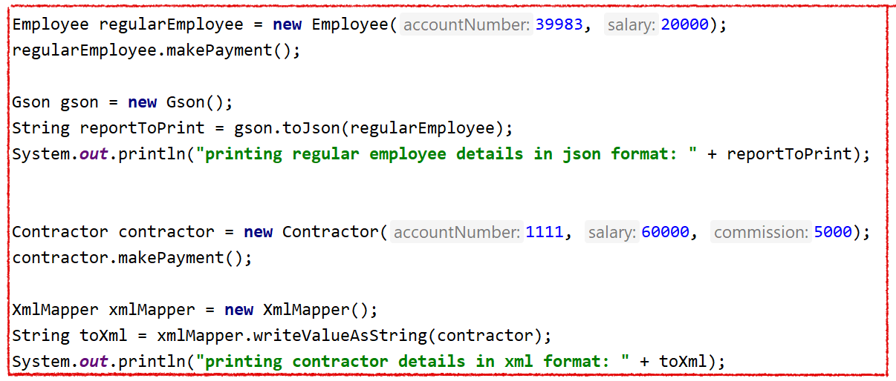
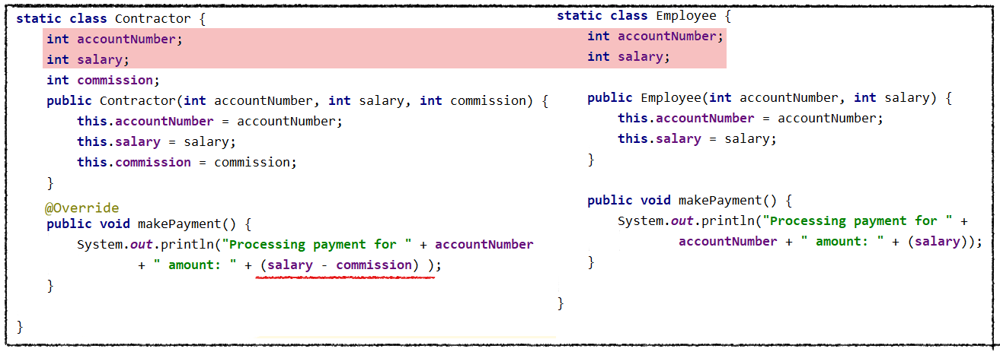
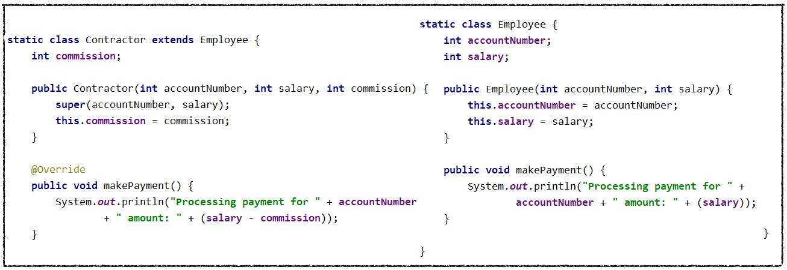
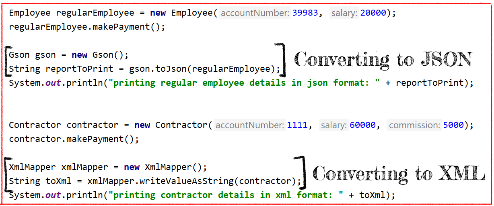
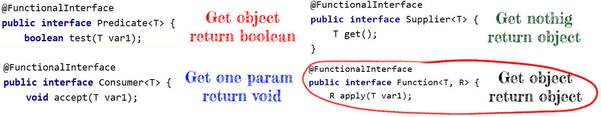
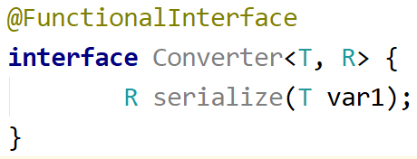
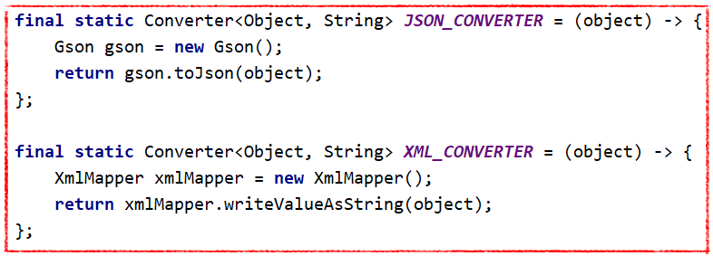
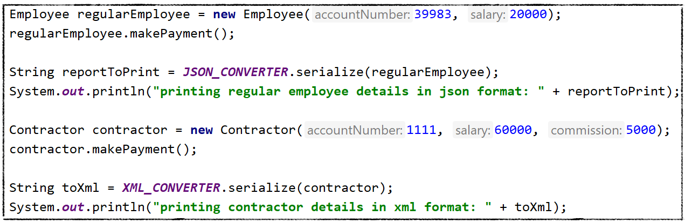
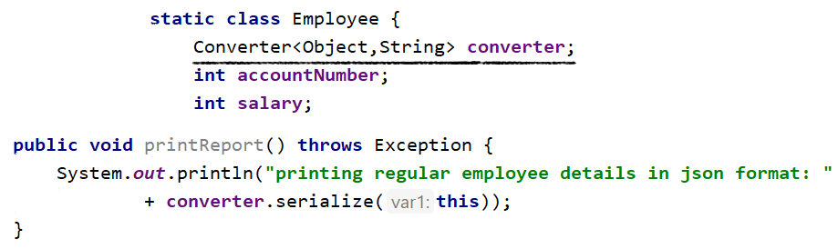
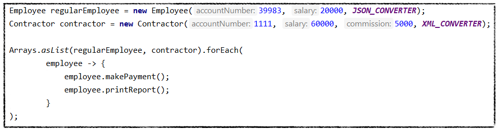

REFCARDZ TREND REPORTS WEBINARS | Agile AI Big Data Cloud Database DevOps Integration IoT Java Microservices Open Source Performance Security Web Dev
DZone > Java Zone > Refactoring Java Application: Object-Oriented And Functional Approaches
Learn how you can achieve better design using object- oriented and functional approaches.
This post includes examples with inheritance and functional interfaces.
by Dmitry Egorov CORE · May. 11, 22 · Java Zone · TutorialRefactoring in Java has many aspects, but among all of them, there are two fundamentals: object-oriented and
functional. Object-oriented existed almost from the first Java version, whereas functional appeared only with
Java 1.8 (March 2014).
Java is a classical object-oriented language and allows the creation of flexible object structures. After Java 1.8
received functional features, it became capable to operate not only with objects or methods but with lambdas
(which is executable code itself). In the functional world, you can operate with functions as with objects in the
OO world.Playing with interfaces and classes using inheritance or composition, you can create reusable generic solutions
that can reduce the code amount and increase readability. Classes can be united in the same common structure
if they:
Unlike the OO approach, this one extracts the code that has the same behavior. For example, we can recognize
similarities in the next examples:
Let's assume we have a small application that makes payments to permanent and contract employees.
fter each payment, we print a report about Employee and show the in data different formats (JSON and XML for
A permanent and contractor).
Now let's take a look at the default structure:
It is pretty visible that Contractor can be a child of Employee class. makePayment can be overridden
(also we might create a Payable interface and extract makePayment method, but let's keep it simple). So after
refactoring, we might have some fields in common together with reused constructors.
Now we can review and find similarities from a functional perspective:
As you can see from the printing report, we process it in the same way: we pass an object and return a string.
So we can extract that code as a reusable function and use it dynamically for this business logic or even
outside of it.
In order to decide the right functional interface (e.g., Predicate, Consumer, Function, etc.), we need to check our
inputs and outputs. In our case, we get an Object and convert it to a String.
Such an interface is provided by function, but in order to make it more clear, we create our own Converter
interface with method serialize. In that case, it would be easily readable:
Now having a functional interface we create two Converters: json and xml. Both of them will match the
defined signature (object input and string output).
Now let's use them in our code:
As in the last step, we can encapsulate this function right inside the parent Employer class and use them inside
the internal function:
As in the last step, we initialize both employers and iterate through them executing payment and printing methods.
So what do we have at the end?
The shown example is not perfect and can be improved. For example, we can hide the Employee/Contractors
class behind the interface, and it's good practice! I tried to write a simple example and decided to show just
some OO and Functional features.
The functions I've created are not pure functions and some developers insist it's much better to have only pure
functions in Java. It's a big discussion outside of this article.
One of the purposes of this article was to make readers more confident with a functional approach;
but at the same time, I'm a person who prefers methods or static methods over functions. Why? Because the old method
approach allows you to read code line by line from top to bottom and you can easily see the logic. With a
functional approach, you have to return back (or memorize) the function content when the function is called.
So, as I think about extracting the same functionality code into methods/static methods - personally, I think it
might be better.
The main message of this article is: